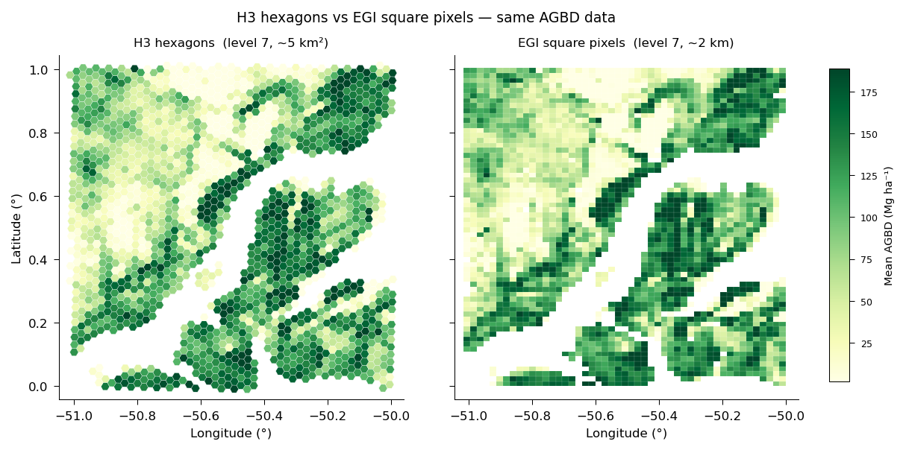
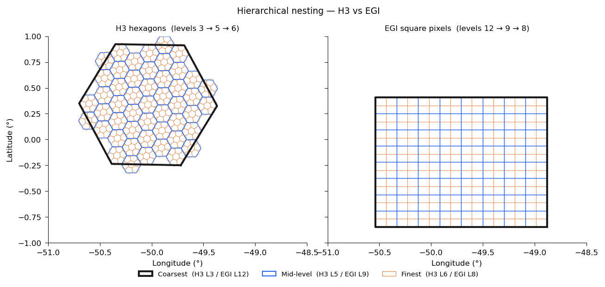

EGI Square-Pixel Indexing#
EGI (EASE Grid Index) is an advanced spatial indexing option in gedih3, designed for workflows that require alignment with standard raster grids or compatibility with GEDI L4B gridded products.
For most users, H3 is the right choice. This page is for users who need square pixels, raster-native workflows, or GEDI L4B compatibility.
What is EGI?#
The EASE Grid Index (EGI) is a square-pixel indexing system built on the EASE-Grid 2.0 projection — a global equal-area cylindrical projection standardized by NASA/NSIDC (EPSG:6933). It divides the projected coordinate space into a regular grid of square pixels at multiple resolution levels.
Unlike H3 hexagons, EGI pixels are perfectly regular squares in an equal-area projected coordinate system. This makes them:
Directly rasterizable — EGI cells map 1:1 to raster pixels without any geometric transformation
Compatible with standard GeoTIFF workflows — no hexagon-to-pixel conversion step required
Aligned with the GEDI L4B standard grid — GEDI’s official gridded biomass product uses a 1 km EASE-Grid 2.0 grid, which corresponds to EGI level 6

The same AGBD data aggregated to H3 level-7 hexagons (~5 km², left) and EGI level-7 square pixels (~2 km, right). Square pixels map 1:1 to raster output and align with the GEDI L4B grid; hexagons suit general spatial queries.#
EGI Resolution Levels#
Note: Lower EGI level = finer resolution. This is the opposite of H3, where higher levels are finer.
Level |
Pixel Size |
Typical Use |
|---|---|---|
1 |
~1 m |
Finest; sub-footprint |
2 |
~5 m |
Very fine |
3 |
~25 m |
GEDI footprint scale |
4 |
~100 m |
NISAR compatible |
5 |
~200 m |
BIOMASS compatible |
6 |
~1 km |
GEDI L4B baseline |
7 |
~2 km |
GEDI threshold |
8 |
~10 km |
Wall-to-wall |
9 |
~20 km |
Continental |
10 |
~40 km |
Large region |
11 |
~80 km |
Sub-continental |
12 |
~160 km |
Partition tiles (default) |
Why Use EGI Instead of H3?#
Consideration |
H3 |
EGI |
|---|---|---|
Grid shape |
Hexagonal |
Square |
Coordinate system |
WGS84 (EPSG:4326) |
EASE-Grid 2.0 (EPSG:6933) |
Rasterization complexity |
Requires hex-to-pixel conversion |
Direct 1:1 mapping |
GEDI L4B compatible |
No |
Yes |
Parent/child nesting |
Not perfectly geometric |
Perfectly geometric |
Best for |
General analysis, spatial queries |
Gridded products, L4B comparison |
Choose EGI when:
You need outputs that align with GEDI L4B or other EASE-Grid 2.0 products
You want clean raster outputs without hexagon interpolation artifacts
You are building global pixel-grid datasets for interoperability with remote sensing products that use square pixels
You need perfectly geometric parent/child containment across resolution levels (EGI squares nest exactly)
How gedih3 Uses EGI#
EGI is integrated throughout the gedih3 pipeline as an alternative to H3 indexing for extraction, aggregation, and rasterization.
Direct Loading from H3 Database (No Shuffle)#
The most powerful EGI feature is egi_load() — it loads directly from an H3 database into EGI-partitioned Dask DataFrames without any data shuffle. The EGI↔H3 cell intersection is pre-computed, and data is read directly tile by tile.
import gedih3.gh3driver as gh3
# Load from H3 database, partitioned by EGI tiles (~160 km × ~160 km)
ddf = gh3.egi_load(
source='~/gedi_data/h3/',
columns=['agbd_l4a'],
index_level=6, # ~1 km EGI pixels
partition_level=12, # ~160 km tiles (default)
)
# Aggregate to ~1 km (same as L4B resolution)
agg = gh3.egi_aggregate(ddf, target_level=6, agg='mean')
CLI Workflow#
# Extract with EGI indexing
gh3_extract -d ~/gedi_data/h3/ -egi 6 -o extracted_egi/
# Aggregate to ~1 km EGI pixels
gh3_aggregate -d ~/gedi_data/h3/ -egi 6 -a mean -o aggregated_egi/
# Aggregate and rasterize in one step
gh3_aggregate -d ~/gedi_data/h3/ -egi 6 -a mean -R -o output/
EGI Level Syntax#
EGI accepts an optional INDEX:PARTITION syntax to control both the index resolution and the partition tile size:
-egi 6 # Index at level 6, partition at default level 12
-egi 6:10 # Index at level 6, partition at level 10 (~40 km tiles)
EGI vs H3: A Practical Guide#
Use H3 (default) when:
You want the simplest setup for exploratory analysis
You are performing spatial queries, joins, or custom aggregations
You are not comparing against gridded products
Use EGI when:
You need GEDI L4B-compatible outputs
You are producing global gridded products for external users
You want native GeoTIFF outputs without hexagon-to-pixel interpolation

H3 (left) and EGI (right) hierarchical nesting. H3 levels 3 → 5 → 6 show the Gosper-island fractal subdivision; EGI levels 12 → 9 → 8 show regular square containment — each parent subdivides evenly into child pixels. EGI tiles appear rectangular here because they are square in EPSG:6933 (equal-area) but distort when reprojected to WGS84 for display.#